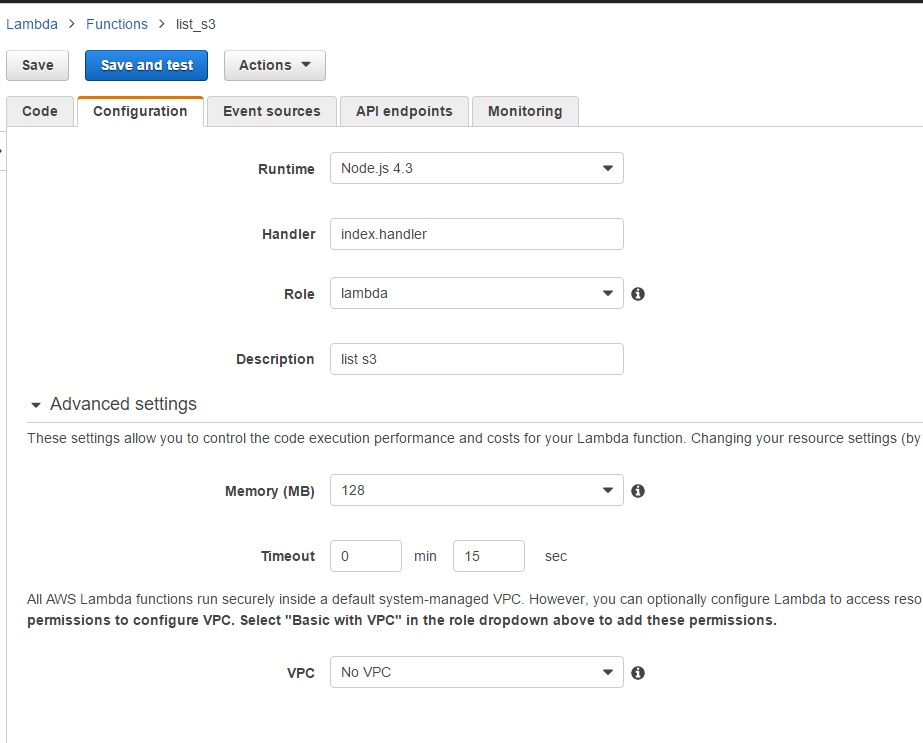
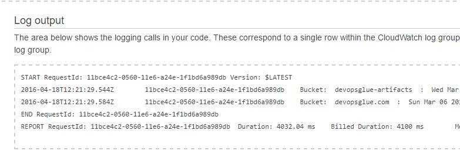
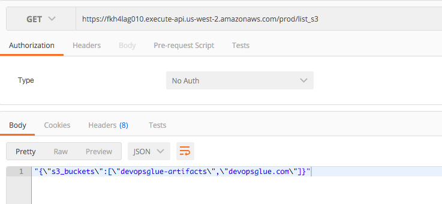
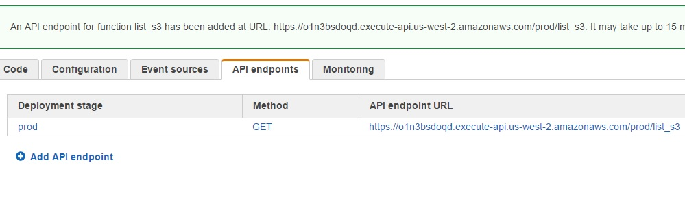
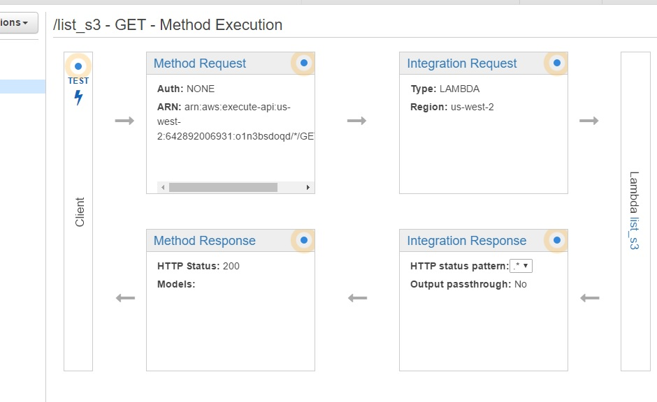
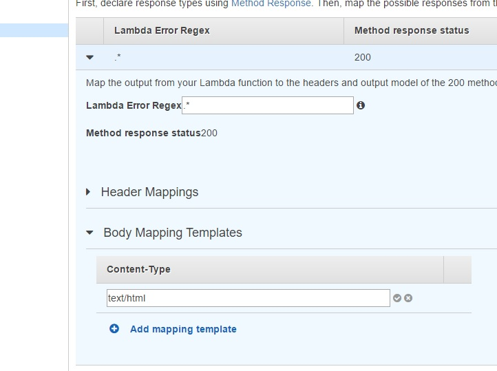
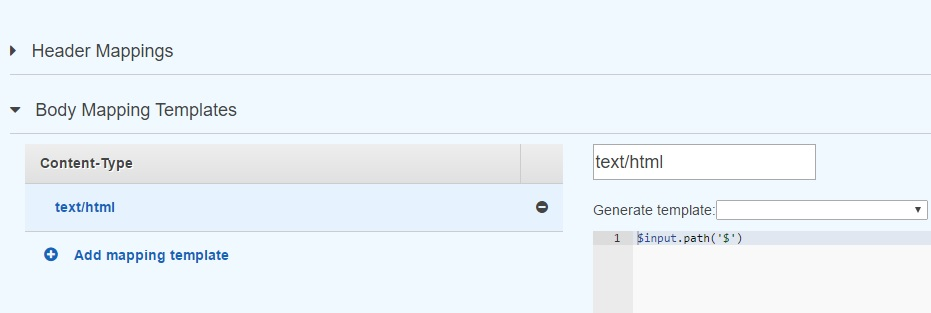
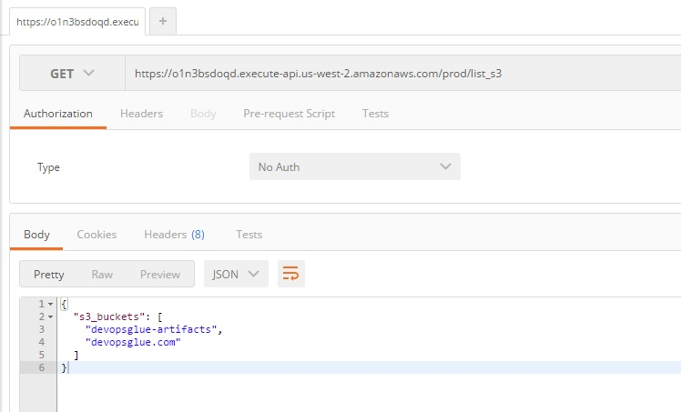

Lambda allows for functions to be executed without a backend server, that is lambda functions can be executed on shared resources with the user billed for each function, execution time and memory requirements. Lambda is extremely useful because it can be connected to an api gateway and hence invoked using a POST or GET method. Several languages are supported by lambda with this tutorial supporting the NodeJS variant.
Lambda functions are written the same way you would write normal code, in the context of the aws sdk, it is also written in the same manner. However when the aws sdk is used for any language you must use a role instead of using AWS keys. AWS roles are defined in IAM and will define what resources/actions the lambda function will have access to, this example uses a role called lambda which has full access to s3 actions and resources. A handler must be specified so that AWS Lambda has an entry point into your code, otherwise how would it know what to invoke?. The handler for this example is simply 'handler' and is referred in the config as index.handler. Once Lambda has an entry point it will invoke the code to same standard that NodeJS would normally run.
NodeJS Lambda (List S3 Buckets) template:
exports.handler = function(event, context) { var AWS = require('aws-sdk'); AWS.config.region = 'us-west-2'; var s3 = new AWS.S3(); s3.listBuckets(function(err, data) { if (err) { console.log("Error:", err); } else { for (var index in data.Buckets) { var bucket = data.Buckets[index]; console.log("Bucket: ", bucket.Name, ' : ', bucket.CreationDate); } } }); }
The below config has the handler as index.handler which is the entry point for lambda to invoke your function. The handler must match the handler in your code which is exports.handler. If you named this exports.myfunction then the handler specified in the config would be index.myfunction. Memory is defaulted to 128Mb but this can be customized. The example only lists s3 buckets but given a much more complex task you can start to see the power of Lambda. It is extremely cost effective since you are only billed for what you use and it scales out very efficiently.
The Lambda configuration required, the default timeout is 3 seconds, you will need to increase this to something more reasonable:
{kind=link}
A successful execution will return the below, it is very important to trial and error with timeouts, otherwise the function will be prematurely cut off. The maximum timeout is 3 minutes.
The results show the s3 buckets used to host this site:
{kind=link}
API Gateway + Lambda
Callbacks are a staple in NodeJS, while intimidating at first the below uses callbacks since Node is asynchronous in nature. Node does not wait for a function to execute before moving on, so callbacks are used to pass functions as arguments to be run. Our callback function is chained twice with the handler invoking it at top level. Callback values cannot be assigned to variables outside that function, normally Promise or Async would help through the use of waterfall to give a synchronous structure to asynchronous functions. Unfortunately Lambda does not support the async npm module (does support promise) As an alternative we will use the handler's callback functionality. When the lambda function is assigned an Api gateway URL, we can perform a get as shown through postman.
NodeJS Lambda + callback for api gateway (List S3 Buckets) template:
exports.handler = function(event, context, callback) { var AWS = require('aws-sdk'); AWS.config.region = 'us-west-2'; var s3 = new AWS.S3(); s3.listBuckets(function(err, data) { if (err) { console.log('Error:', err); } else { //New array var s3_buckets = []; for (var index in data.Buckets) { var bucket = data.Buckets[index]; //push bucket name into array s3_buckets.push(bucket.Name); console.log("Bucket: ", bucket.Name, ' : ', bucket.CreationDate); } //Turn array into json var s3buckets = JSON.stringify({s3_buckets: s3_buckets}); console.log(s3buckets); callback(null, s3buckets); } },callback); }
Lambda with API gateway tested through Postman:
{kind=link}
API Gateway Integration Response
To remove the extra quotations in the api response, we must change the ingeration resposne in the api gateway control panel by putting $input.path('$') into the mapping template as shown below.
Step 1: Lambda Console
{kind=link}
Step 2: API Gateway Console - Click into the Method Execution for your resource (GET/POST/etc) - Click Integration Response
{kind=link}
Step 3: API Gateway Console - Click Body Mapping template - Add text/html
{kind=link}
Step 4: API Gateway Console - Add $input.path('$') in template box
{kind=link}
Make sure to redeploy the API, otherwise it will not become live.
Step 5: Postman
{kind=link}
JAWS
Lambda has basically allowed the JAWS framework to exist, it is now basically possible to achieve a simple database with web server functionality all through lambda and api gateway. If you chain your lambda functions to an api gateway and by writing some management with dynamoDB inside your code then you have basically achieved a webserver with database functionality while all being serverless. Absolutely amazing!
AWS JAWS framework